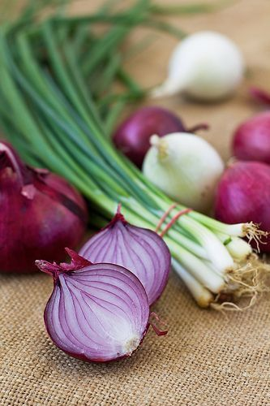

Onion Cultivation Guide

1. Land Preparation
Plow land 2–3 times and apply well-rotted FYM (15–20 tons/acre).
Create raised beds or flat beds depending on region and irrigation.
Soil should be loose, well-drained, and rich in organic matter.
2. Seed Selection & Transplanting
Select high-yielding and disease-resistant onion varieties.
Raise nursery: Sow seeds in seedbeds (bed size: 1m x 3m) and cover lightly.
Transplant healthy seedlings (40–45 days old) at 10x15 cm spacing.
3. Water Management
First irrigation immediately after transplanting.
Subsequent irrigation every 7–10 days based on weather and soil type.
Stop irrigation 10–15 days before harvesting for better bulb quality.
4. Fertilization Schedule
Basal dose: FYM (15–20 tons), 40:60:60 kg NPK per acre.
Top dressing: 20 kg urea in two splits after 30 and 45 days of transplanting.
5. Weed & Pest Management
2–3 hand weedings during crop period or use herbicides like Pendimethalin.
Pests: Thrips, onion fly — controlled using neem oil or recommended sprays.
Diseases: Purple blotch, downy mildew — apply fungicides when symptoms appear.
6. Investment Breakdown (Per Acre)
Input
Estimated Cost (INR)
Seeds
₹2,000 – ₹3,000
Fertilizers & FYM
₹4,000 – ₹5,000
Pesticides/Fungicides
₹2,000 – ₹3,000
Labor
₹6,000 – ₹9,000
Irrigation
₹2,000 – ₹3,000
Total Investment
₹18,000 – ₹23,000 per acre
7. Harvesting & Yield
Harvest when tops fall and necks become soft and dry (100–130 days after transplanting).
Expected yield: 80–120 quintals per acre depending on variety and care.
8. Market Rate & Profit Estimation
Market price: ₹800 – ₹1,800 per quintal.
Gross returns: ₹64,000 – ₹2,16,000 per acre.
Net profit: ₹40,000 – ₹1,90,000 per acre.